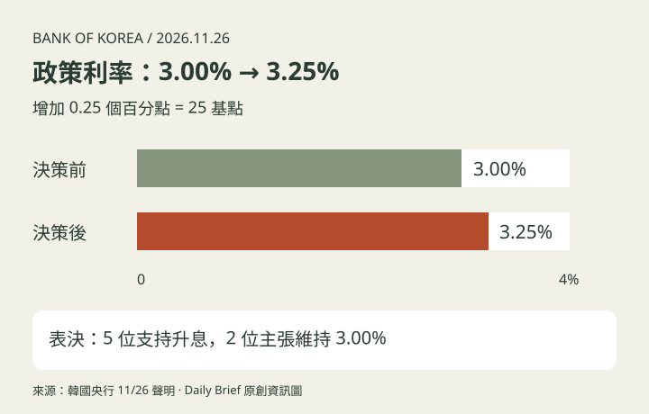

MARKETS / THE ESSENTIALS
韓國央行升息 25 基點至 3.25%，5 比 2 通過
收錄於 2026-11-27 日報 · 韓國央行官方決策與記者會開場
已確認的變化
- 韓國央行26日貨幣政策聲明決定，基準利率由3.00%升至3.25%，增加0.25個百分點、即25基點；5位委員支持，2位主張維持3.00%。比較基準是本次決策前的政策利率。
- 聲明指出國內成長增強、通膨可能在相當期間高於目標，並須留意首爾及周邊房市與家庭債務。央行也觀察到AI投資疑慮引發股市修正，不能只用股市走弱推論必然降息。
為何重要與限制
- 政策利率影響融資與利差判斷；應分清央行已採取行動與市場對未來路徑的預期。 後續調升時點仍取決於通膨、經濟與金融穩定，不推定韓元或債券必然朝單一方向變動。

原文與查核
以上為整理與解讀，重要細節請回到原文核對。
- 韓國央行官方決策與記者會開場 ↗發布 2026-11-26 · 查核 2026-11-27T05:08:23+08:00